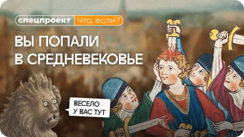
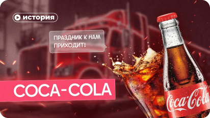

поиск
Избранное
Философия Идущего к реке
☉ Правое полушарие интроверта
🕒 31 мин 25 сек

Как выжить в Средние века?
☉ Правое полушарие интроверта
🕒 31 мин 25 сек

История Кока Колы
☉ Правое полушарие интроверта
🕒 31 мин 25 сек